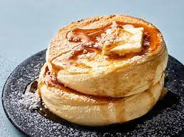

Pancake

Description
This recipe will help you create a nice fluffy
souffle pancake. This is the perfect breakfast
dish, and it's a great dish to impress your friends.
I would personally recommend it for a brunch date!
Now keep in mind this isn't a normal pancake
that you are probably used to seeing or making.
This is a souffle pancake.
These types of pancakes take significantly longer to
cook, longer cook time is necessary to get the
soft and fluffy texture as seen in the picture
above.
Ingredients
- eggs
- milk
- salt
- sugar
- butter
- cake flour
- water
- baking powder
- sugar free syrup
Steps
- Preheat pan to medium
- Separate egg yolks from whites
- Beat egg whites slowly until they form a cloud-like consistency
- Mix egg yolks along with rest of ingredients in large bowl
- Mix dry ingredients into large bowl
- Slowly fold in egg whites into the rest of the mix
- Pour mixture onto the warm pan, and cover with lid
- Let pancake cook for 10 minutes, then remove cover
and flip the cake, before covering it again
- Let the second side cook for 5 minutes, then place onto a plate
- Now you can make as many as you want, and it's ready to be dressed with
syrup and butter, go ahead and devour it!